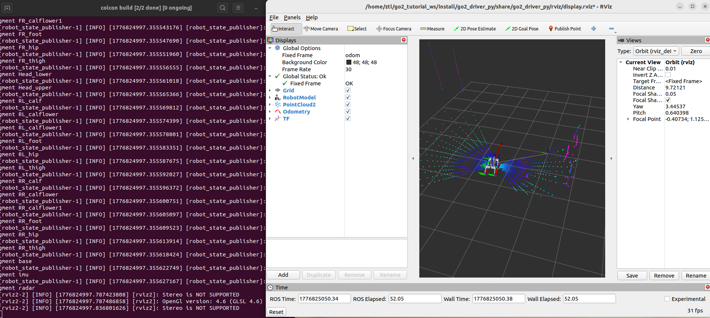

第 5 章 在 RViz 里看见 Go2¶
前两章我们已经让 Go2 能接收控制命令了，但“机器人会动”和“我们能看懂它怎么动”是两回事。从这一章开始，我们把视线转到可视化链路，让
odom、TF 和/joint_states一起在 RViz 里连起来。
本章你将学到¶
- 理解
/odom、TF、/joint_states在 RViz 可视化里的分工 - 看懂为什么当前代码树里不再需要单独的关节桥接节点
- 学会直接复用
go2_driver_py作为可视化底座
背景与原理¶
RViz 之所以这么重要，不是因为它“看起来直观”，而是因为它把三类最关键的信息摆到了一起:
- 机器人整体在哪儿:看
/odom - 机器人各个 link 怎么连:看 TF
- 机器人每个关节转了多少:看
/joint_states
这三条线只要有一条断了，后面做 SLAM、导航、传感器标定时都会很难排错。
和旧版教学资料不同，当前代码树里没有单独的“关节桥接过渡包”。现在的做法更直接:
go2_driver_py/driver同时发布/odomgo2_driver_py/driver同时广播odom -> basego2_driver_py/driver也直接发布/joint_states
也就是说，原来"关节桥接"这一层独立节点，现在已经并入 driver 了。但这不代表第 5 章和第 6 章就该合成一步——本章只用 driver 产出的状态链（/odom、TF、/joint_states）把机器人在 RViz 里立起来，还不引入 twist_bridge 这层控制通道，那部分属于第 6 章完整驱动包的事。
架构总览¶
flowchart LR
A["/lf/sportmodestate<br/>unitree_go/msg/SportModeState"] --> B[go2_driver_py/driver]
C["/lf/lowstate<br/>unitree_go/msg/LowState"] --> B
B --> D["/odom<br/>nav_msgs/msg/Odometry"]
B --> E["/joint_states<br/>sensor_msgs/msg/JointState"]
B --> F["odom -> base<br/>TF"]
G[go2_description] --> H[robot_state_publisher]
E --> H
F --> I[RViz]
D --> I
H --> I这套链路最关键的变化是:关节状态发布不再是独立节点，而是直接并进了 driver。
好处也很直接。本章只需要启动 visualization.launch.py，模型、关节、TF、里程计就能一起起来，不会再出现两个节点抢着发 /joint_states 的问题。twist_bridge 这层控制桥留给第 6 章的 driver.launch.py 再并入。
环境准备¶
开始前先确认两个包已经在工作空间里:
go2_descriptiongo2_driver_py
你还需要知道，当前 driver 节点订阅的真机原生话题是:
/lf/sportmodestate/lf/lowstate
前者拿机器人整体位姿和速度，后者拿 12 个关节角度。这个分工后面第 6 章还会再展开讲，这一章先把它当成“可视化数据源”就够了。
实现步骤¶
步骤一:先确认 driver.py 已经把三类可视化数据都包进去了¶
先看 src/base/go2_driver_py/go2_driver_py/driver.py 里最关键的初始化部分:
class Driver(Node):
def __init__(self):
super().__init__("driver_py")
self.declare_parameter("odom_frame", "odom")
self.declare_parameter("base_frame", "base")
self.declare_parameter("publish_tf", "true")
self.odom_pub = self.create_publisher(Odometry, "odom", 10)
self.mode_sub = self.create_subscription(
SportModeState, "/lf/sportmodestate", self.mode_cb, 10
)
self.tf_bro = TransformBroadcaster(self)
self.joint_pub = self.create_publisher(JointState, "joint_states", 10)
self.state_sub = self.create_subscription(
LowState, "/lf/lowstate", self.state_cb, 10
)
这段代码已经把第 5 章最关心的三样东西都准备好了:
odom- TF 广播器
joint_states
所以你现在不用再去找什么单独的关节桥接脚本。当前仓库里，关节状态就是在 state_cb() 里直接从 LowState 解析出来，然后发布到 /joint_states。
步骤二:看懂关节状态和里程计分别从哪来¶
先看关节状态回调:
def state_cb(self, state: LowState):
joint_state = JointState()
joint_state.header.stamp = self.get_clock().now().to_msg()
joint_state.name = [
"FL_hip_joint", "FL_thigh_joint", "FL_calf_joint",
"FR_hip_joint", "FR_thigh_joint", "FR_calf_joint",
"RL_hip_joint", "RL_thigh_joint", "RL_calf_joint",
"RR_hip_joint", "RR_thigh_joint", "RR_calf_joint",
]
for i in range(12):
joint_state.position.append(float(state.motor_state[i].q))
self.joint_pub.publish(joint_state)
这一段很典型:它做的不是“控制”，而是“翻译”。
LowState 是 Go2 自己的原生消息格式，RViz 和 robot_state_publisher 更喜欢标准的 sensor_msgs/msg/JointState。所以 driver 节点在这里充当的角色，正是消息标准化。
再看里程计和 TF 回调:
def mode_cb(self, mode: SportModeState):
odom = Odometry()
odom.header.frame_id = self.odom_frame
odom.child_frame_id = self.base_frame
odom.pose.pose.position.x = float(mode.position[0])
odom.pose.pose.position.y = float(mode.position[1])
odom.pose.pose.position.z = float(mode.position[2])
odom.pose.pose.orientation.w = float(mode.imu_state.quaternion[0])
odom.pose.pose.orientation.x = float(mode.imu_state.quaternion[1])
odom.pose.pose.orientation.y = float(mode.imu_state.quaternion[2])
odom.pose.pose.orientation.z = float(mode.imu_state.quaternion[3])
self.odom_pub.publish(odom)
if self.publish_tf:
transform = TransformStamped()
transform.header.frame_id = self.odom_frame
transform.child_frame_id = self.base_frame
transform.transform.translation.x = odom.pose.pose.position.x
transform.transform.translation.y = odom.pose.pose.position.y
transform.transform.translation.z = odom.pose.pose.position.z
transform.transform.rotation = odom.pose.pose.orientation
self.tf_bro.sendTransform(transform)
这段代码说明一件很关键的事:当前可视化链不是“自己积分推 odom”，而是直接用 SportModeState 里已有的位置和姿态字段，整理成标准 Odometry 和 TF。
步骤三:用 visualization.launch.py 一次拉起可视化底座¶
现在看本章专用的启动文件 src/base/go2_driver_py/launch/visualization.launch.py。这一份 launch 做了四件事:
- 包含
go2_description的模型显示 launch - 按需启动 RViz
- 启动一个
radar -> utlidar_lidar的静态 TF - 启动
driver节点（发/odom、TF、/joint_states）
注意这里故意不启动 twist_bridge。本章目标是"把 Go2 在 RViz 里立起来"，不涉及控制链；twist_bridge 要到第 6 章的 driver.launch.py 里才会并进来。
关键部分如下:
return LaunchDescription([
use_rviz,
IncludeLaunchDescription(
PythonLaunchDescriptionSource(
os.path.join(go2_description_pkg, "launch", "display.launch.py")
),
launch_arguments={"use_joint_state_publisher": "false"}.items(),
),
Node(
package="rviz2",
executable="rviz2",
arguments=["-d", os.path.join(go2_driver_pkg, "rviz", "display.rviz")],
condition=IfCondition(LaunchConfiguration("use_rviz")),
),
Node(
package="tf2_ros",
executable="static_transform_publisher",
arguments=["--frame-id", "radar", "--child-frame-id", "utlidar_lidar"],
),
Node(
package="go2_driver_py",
executable="driver",
parameters=[os.path.join(go2_driver_pkg, "params", "driver.yaml")],
),
])
注意这里专门把 use_joint_state_publisher 关成了 false。
原因很简单:默认的 joint_state_publisher 是给"没有真机关节数据时"用的；我们现在已经有真实的 /joint_states 了，再开一份假的就会跟真实数据打架。
编译与运行¶
先把相关包编译好:
# 编译可视化底座相关的两个包
cd ~/unitree_go2_ws
colcon build --packages-select go2_description go2_driver_py
source install/setup.bash
最推荐的启动方式是一条命令直接拉起可视化底座:
# 启动模型、RViz、静态 TF 和 driver
cd ~/unitree_go2_ws
source install/setup.bash
ros2 launch go2_driver_py visualization.launch.py
如果你只想先确认数据链，不想开 RViz，可以关掉它:
# 只起数据链，不开 RViz
cd ~/unitree_go2_ws
source install/setup.bash
ros2 launch go2_driver_py visualization.launch.py use_rviz:=false
也可以单独跑 driver 节点本身:
结果验证¶
这一章跑通后，你应该能确认下面三件事:
/joint_states正在发布/odom正在发布- TF 树里已经有
odom -> base
推荐按下面顺序检查:
# 看关节状态
ros2 topic echo /joint_states --once
# 看里程计
ros2 topic echo /odom --once
# 看 TF 树
ros2 run tf2_tools view_frames
如果 RViz 也开着，你还应该看到:
- RobotModel 能正常加载
- 机器人姿态会跟着真实状态变化
- Fixed Frame 设成
odom后，模型位置不再飘成一坨
结果演示¶
RViz 中能同时看到 RobotModel、TF 和 /odom 轨迹,就说明可视化链路已经能把第 6 章驱动发布的状态画出来。后面排查导航问题时,这张 RViz 视图就是你判断“模型姿态、里程计、坐标系有没有乱”的第一现场。

常见问题¶
1. 模型加载出来了，但四条腿完全不动¶
现象:RobotModel 能显示，但关节姿态像被焊死了一样。
原因:通常是 /joint_states 没有数据，或者被别的节点抢着发布了假数据。
解决:
- 先
ros2 topic echo /joint_states --once - 确认当前系统里只有
go2_driver_py/driver在发/joint_states - 不要再额外启动
joint_state_publisher
2. Fixed Frame 设成 odom 后，RViz 一直报 TF 缺失¶
现象:RobotModel 存在，但 RViz 顶部不断提示缺少 odom -> base。
原因:driver 没有成功发布 TF，或者 publish_tf 被关掉了。
解决:
- 先检查
/odom是否正常 - 再执行
ros2 param get /driver_py publish_tf或直接看driver.yaml - 确认参数还是
true
3. 点云或者雷达框架位置怪怪的¶
现象:后面叠加点云时，传感器看起来像“漂在机器人外面”。
原因:通常是 radar -> utlidar_lidar 这条静态 TF 没起来。
解决:
- 用
ros2 run tf2_tools view_frames看有没有这条边 - 如果没有，检查
driver.launch.py里的static_transform_publisher是否正常启动
4. 我明明看过旧资料，为什么这里没有那层独立关节桥接¶
现象:你按旧资料在找那份单独的关节桥接脚本，但当前代码树里根本没有。
原因:当前仓库已经把那层过渡逻辑合并进 go2_driver_py/driver 了。
解决:
- 把"关节桥接"这件事直接理解成
driver的一部分 - 后面所有章节默认也都按这个新结构往下讲
5. 节点刚起就全挂:failed to enumerate interfaces for "udp"¶
现象:ros2 launch 命令看起来已经正确展开，robot_state_publisher、static_transform_publisher、driver 都已进入初始化阶段，但随后集体报错退出，核心信息是:
failed to enumerate interfaces for "udp": -1
rmw_create_node: failed to create domain, error Error
rcl node's rmw handle is invalid
原因:这不是本章代码或 launch 写错，而是 CycloneDDS 运行环境没准备好——通常是 Humble 或 cyclonedds_ws 的环境变量没 source 进当前终端。ROS2 创建节点时无法枚举 UDP 接口，所有节点都会跟着挂掉。
解决:
-
先在当前终端重新 source 一遍环境:
-
再用最朴素的命令验证 DDS 能不能通:
如果这条都挂，说明 DDS 环境本身坏了，需要回头检查
CYCLONEDDS_URI、网卡状态，而不是继续调本章代码。 -
DDS 正常后再重新执行
ros2 launch go2_driver_py visualization.launch.py。
本章小结¶
这一章我们把 Go2 在 RViz 里的可视化链真正跑顺了。
最重要的收获不是“能看到模型”，而是你已经知道这套可视化依赖哪三类数据: /odom、TF、/joint_states。更关键的是，当前代码树里这三类数据都由 go2_driver_py/driver 统一输出。
下一章我们就不再只把它当成“可视化底座”了，而是把这个 driver 节点本身完整拆开，看清楚它到底是怎么从原始机器人状态整理出标准 ROS2 数据的。